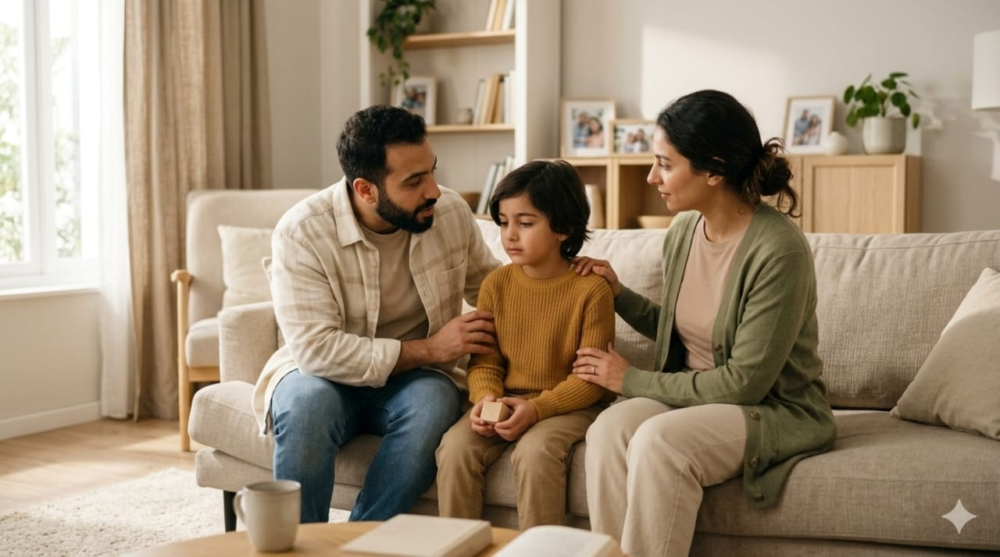

8 – 8.5 سنوات
الطفل في السن ده يبدأ يجادل أكتر ويختبر الحدود، ومع زيادة الواجبات يحتاج تدريب على تحمّل الإحباط والتركيز لفترات أطول بدون صدام يومي.

مهم: الجدال مش “قلة احترام” دائمًا… غالبًا محاولة
لفهم السبب + إثبات الذات.